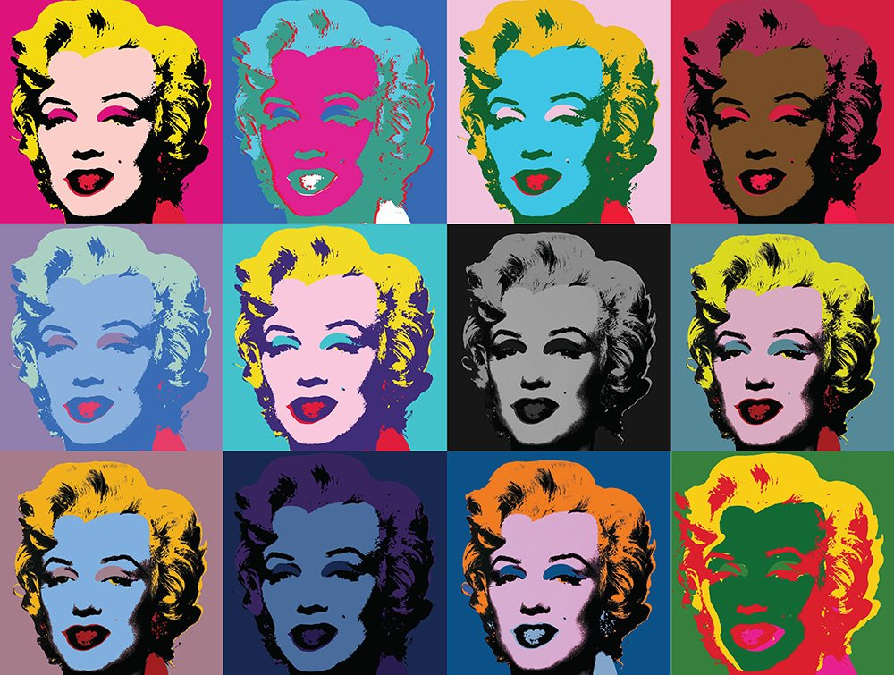
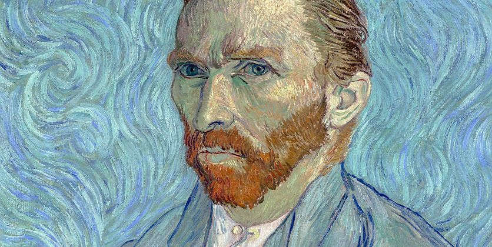
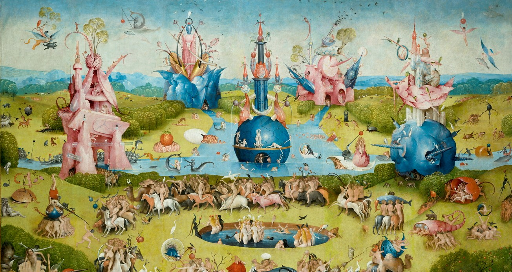

¿Aún no estás convencido? Te dejamos esta galería de imágenes en donde podrás tomar un poco
de inspiración de los mejores y más emblemáticos artistas para comenzar.

Marilyn - Andy Warhol
Representa el icono pop Marilyn Monroe, utilizando técnicas de serigrafía y colores vivos para hacer una crítica a la cultura de la fama y la superficialidad.

Autorretrato - Vincent Van Gogh
Una representación introspectiva del artista, que refleja su tormento mental y su pasión por el arte a través de trazos expresivos y vibrantes pinceladas.

El jardín de las delicias - El Bosco
Una pintura surrealista que representa un paisaje místico y enigmático lleno de simbolismo, que explora temas religiosos y morales a través de escenas fantásticas y grotescas.